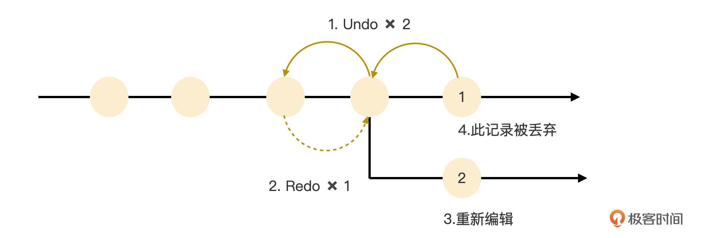
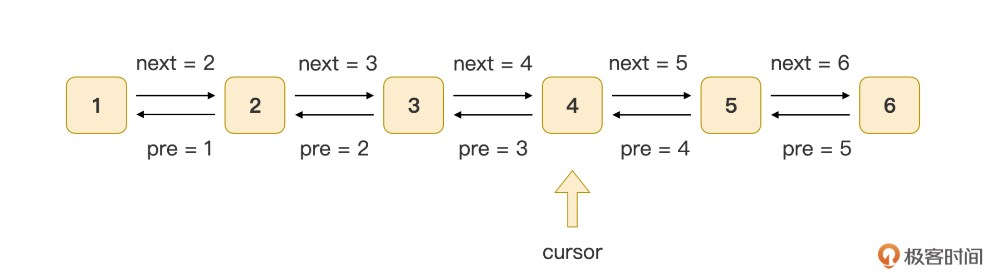
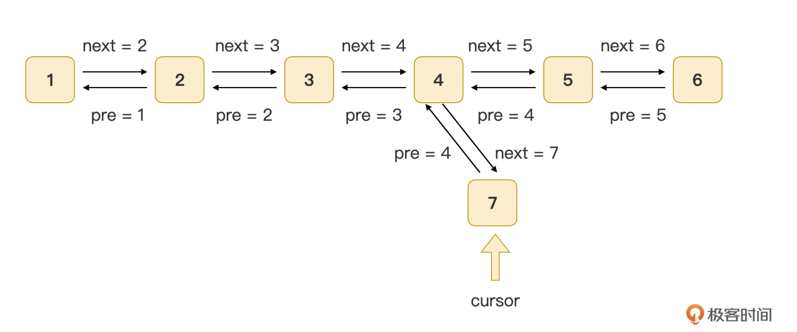
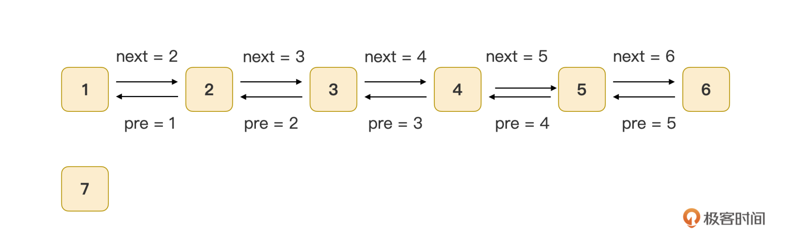
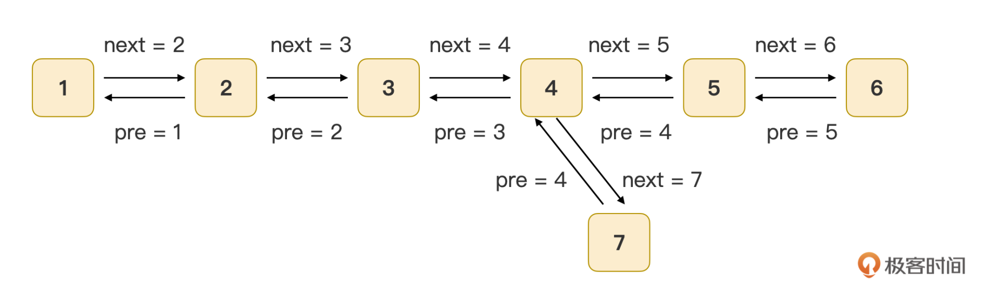
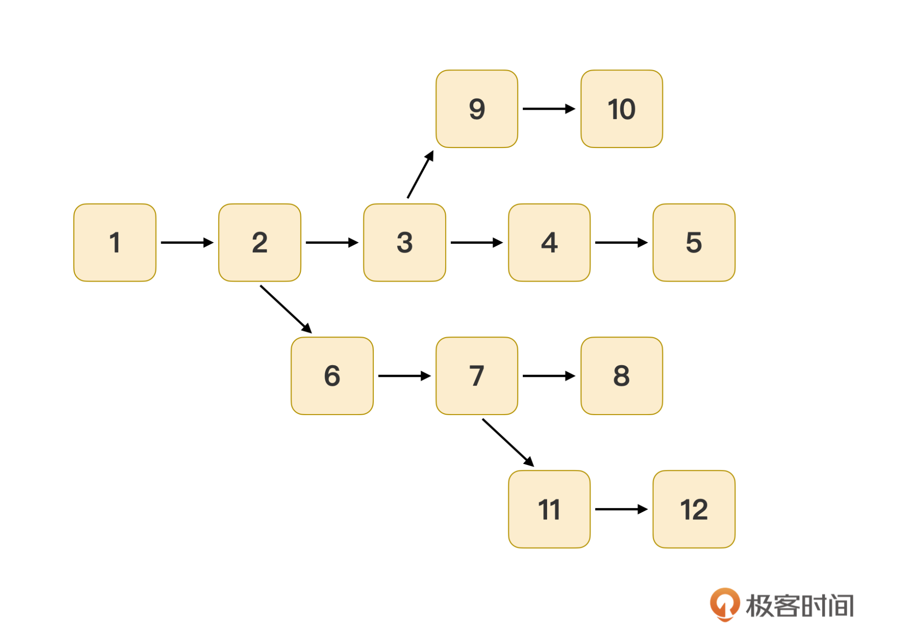
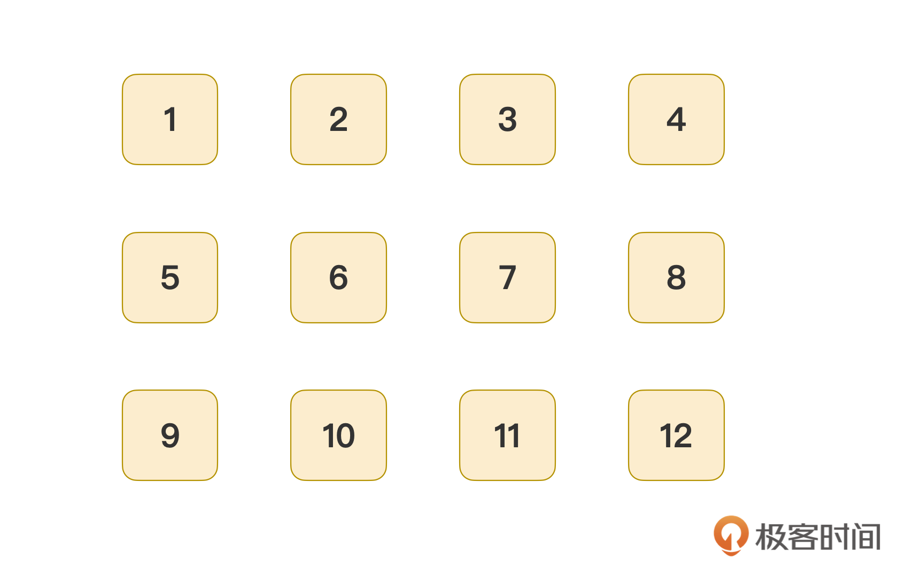
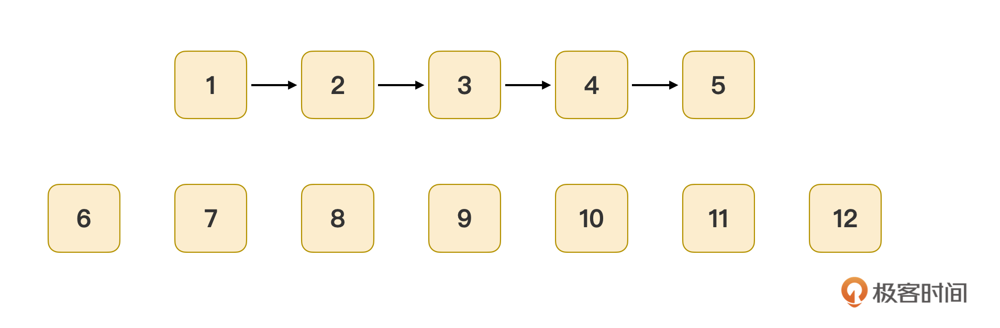
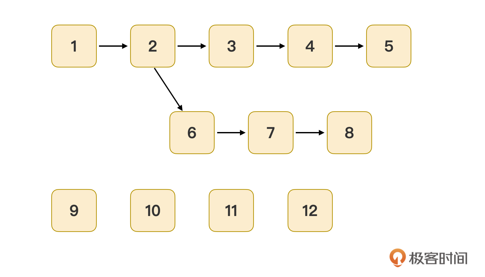

- 00 开篇词｜抛开争论，先来看看真正的低代码.md
- 01｜低代码平台到底是什么样的？.md
- 02｜低代码到底是银弹，还是行业毒瘤？.md
- 03｜低代码的天花板：一个完备的低代码平台应该具备哪些条件？.md
- 04｜演进策略：先发展通用能力还是先满足业务需求？.md
- 05｜基础设施 ：启动低代码平台研发之前，你需要有什么家底？.md
- 06｜踏出新手村便遭遇大Boss：如何架构低代码的引擎？.md
- 07｜结构化代码生成法：代码如何生成代码？.md
- 08｜布局编辑器：如何做到鱼和熊掌兼得？.md
- 09｜属性编辑器：如何解除Web组件属性与编辑器的耦合？.md
- 10 可视化编程：如何有效降低App前后端逻辑开发的技能门槛？.md
- 11｜亦敌亦友：Low Code与Pro Code混合使用怎样实现？.md
- 12 业务数据：再好的App，没有数据也是白搭.md
- 13｜多人协同编辑：野百合的春天为啥来得这么晚？.md
- 14｜编辑历史：是对Git做改造，还是另辟蹊径？.md
- 15｜低代码平台应该优先覆盖应用研发生命周期中的哪些功能？.md
- 16｜扩展与定制：如何实现插件系统并形成生态圈？.md
- 17｜兼容性问题：如何有效发现兼容性问题？.md
- 18｜兼容性问题：如何有效解决兼容性问题？.md
- 总结与展望｜低代码之路，我们才刚刚开始.md
14｜编辑历史：是对Git做改造，还是另辟蹊径？
今天来聊聊低代码编辑器的编辑历史。人生没有后悔药，但在计算机世界里，编辑历史就是后悔药，不但常见，而且非常廉价。
多数编辑器，如代码编辑器，或者我正在码字的编辑器，都会配备最普通的编辑历史管理功能。你可以从近到远地撤销（Undo）掉所做的修改。如果撤销了之后，没有做过任何编辑操作，还可以重做（Redo）这些修改，即撤销掉撤销操作。一般在撤销之后，又做了任何操作了，那么所有重做的历史记录都被删除。示意图如下：

编辑历史是一个非常重要且友好的功能，它最主要的目的是鼓励应用开发勇于试错。开发的过程，就是一个不停试错的过程，试错成本越低越好。
作为低代码编辑器，我们同样也要支持上面提到的基本历史管理功能。不仅如此，还要更进一步，支持历史记录多分支功能。比如前面的示意图就是这样，第 3 步重新编辑后，得到了编辑记录 2，此时，编辑器会把记录 1 丢掉，目的是要维持历史记录的单向性。不丢弃记录 1，并且允许该记录继续编辑下去，就会形成历史记录多分支的情形，这和 Git 的分支非常相似。
做过程序开发的都会用到 Git，程序员们看中 Git 的最主要一点就是它强大便捷的分支管理。低代码编辑器作为一个开发工具，对多历史记录分支的支持也是必要的。所以今天这讲，我们就来说说低代码编辑器的编辑历史功能怎么实现。
基本编辑历史功能的实现
上一讲中，我推荐你将 Yjs 这个 CRDT 实现用作多人协作功能的基础算法。即使你不打算提供多人协作功能，我依然推荐你考虑引入 Yjs，它不仅提供了一套完善的增量式编辑历史持久化机制，还提供了一个UndoManager来协助编辑器完成基本历史管理。如果你有机会使用 Yjs，那应该好好考虑一下这个工具。
今天我们不会展开讨论UndoManager的用法，有必要的话，给我留言，看情况我再决定是否专门聊聊。但不管你是否采用 Yjs 算法，我都建议你继续学习这一部分，我会从别的实现方式讨论编辑历史的实现，他山之石可以攻玉。
那么，除了 Yjs，还有其他的工具没？
Git 就是一个很好的备选。Git 轻量小巧，性能优越。而且，它自带了一个文件数据库，用来保存修改历史数据，通过 git commit 和 git log 可以实现对编辑历史的管理。不过，也许你会担心历史记录数量大了之后 Git 的性能表现，我特地去看了Linux 内核代码仓库，现在已经超过 100 万 commit 了。而基于我们的低代码平台 Awade 开发的、那些比较活跃的 App，历史记录数也还未过万。
Git 有非常强大的历史分支管理能力，用于多人协作时，可以利用 Git 强大的自动合并功能，避免上一讲中自行实现多人协作的许多麻烦。而且，由于所有合并和记录操作都可以在服务端上通过 Git 来完成，前端就变得更轻量了，不需要引入 Yjs 这样的库了。同时，Git 的分支管理能力也可以用于这一讲后面要讨论的、低代码编辑器多分支编辑历史功能的实现。这方面无须对 Git 的能力有任何质疑，它生来就是为解决这个问题的。
虽然 Git 没有一个官方社区（或者有但我不知道），但现在世界上有数以千万计的开发人员都在用 Git 来管理代码，基本上你碰到的任何问题都可以在网络上找到大量的解决方案。这也是一个无可比拟的优势。
那我们可以怎么使用 Git 呢？有两种使用 Git 的方式，单仓库方式和多仓库方式。这里我们简单讨论一下。
单仓库方式是把所有的应用数据都放在一个 Git 仓库中，优势是简单只需初始化一次，代价是仓库可能会非常大，历史记录也会非常多，所以我并不推荐你使用这种方式。
我推荐你使用多仓库方式，也就是每个 App 的数据都保存在一个独立的 Git 仓库中。这是一个比较好的方式，git init 一键初始化一个仓库，各个应用数据物理隔离，安全性高。
那么 Git 有没有不适用的一面呢？
我们都知道，Git 适合用于管理多行文本类的数据，它对长单行文本和二进制数据几乎没有办法。但是，我们的低代码编辑器需要管理少量二进制数据，如图片、字体等，可能还有少量的 Excel 文件。
对长单行文本的无能为力是 Git 更致命的一个短板。低代码编辑器一般都是基于结构化数据的，为了简单，会将结构化数据序列化（JSON.stringify）之后进行存储。结构化数据序列化后，就是一个长单行文本。
即使在序列化结构化数据时保持多行的结构，但应用数据里的某些多行属性值，在序列化之后却依然是长单行文本。比如下面这样代码块：
const a = 123;
const b = '123';
console.log(a, b);
如果不做任何处理，在序列化后的值是这样的：
{
"value": "const a = 123;\nconst b = '123';\nconsole.log(a, b);"
}
那么，面对这样的情况，如果拿 Git 做我们的解决方案，应该怎么办呢？
我们可以把多行文本按照换行符拆分为字符串数组，然后再存储：
{
"value": [
"const a = 123;",
"const b = '123';",
"console.log(a, b);"
]
}
使用时，再把这个字符串数组读出来，然后用 arr.join(‘\n’) 就可以还原了。
不过，有的低代码编辑器为了进一步节约空间，不采用 JSON.stringify 来序列化数据，而是采用比如Uint8Array这样的二进制方式来持久化。这个情况下，Git 就几乎帮不上忙了。我们应该避免这样的做法，改用 JSON.stringify。
此外，还有一个问题不那么“显眼”，但其实非常麻烦，Git 采用 GPLv2 协议对外分发版本。这个协议有“感染性”。简单地说，任何软件如果使用了这个协议的软件，都必须开源，否则人家的基金会就会告你，基本一告一个准，赔了钱后，要继续用还必须开源。所以如果你做的是一个商业性质的低代码平台，那么要谨慎。
那是不是就不能用了呢？也不是。只要一个商业软件发布的版本里不包含 Git 的任何文件（二进制或者源码）就好了。所以，你可以想办法给你的客户的运行环境上预装好 Git，就可以绕过去了，或者在安装好你的低代码平台之后，再给一个独立的安装 Git 的流程也行。总之就是要解除你的平台和 Git 等 GPL 软件的捆绑。
也许你会对商业合规嗤之以鼻，那是因为你所在的企业没有像中兴这样，差点因商业合规而面临倒闭。但合规无小事！
虽然上述两个方案都可行，但它们却都不适用于我们的低代码平台 Awade，不能用 Yjs 的原因我在上一讲已经说得很详细了，不用 Git 的一个很主要因素是它使用了 GPL 的协议。在中兴，除非实在是没有替代品，否则所有使用 GPL 协议的软件都默认不用，即使这个软件有一定优势，但漫长累赘的备案审批流程，就能让人退避三舍，所以我们技术选型时，一看到是 GPL 的，直接 Pass。因此，我们自己搞了一个解决方案，这里简要描述一下，供你参考。
在上一讲中我说过，Awade 在持久化时，为了简单，是按照全量数据来存储的，在实现编辑历史的时候，也是基于全量数据的，每个历史记录里都是一份完整的数据。因此撤销也好，重做也罢，就是重读一下数据而已，非常粗暴，但实现非常简单。代价是 Awade 的历史记录数据非常大，一个 App 动辄就有数 G 的历史记录。
每个历史记录都有一个配置文件，用来记录它与其他历史记录的关系。这里的关键部分实际上是一个双向链表。一个历史记录有自己的 id，next 指针指向下一个记录 id，previous 指针指向前一个记录的 id，示意图如下：

示意图1
你可以看到，这是一个典型的双向链表结构，很好理解。同时，App 工程数据里还有一个游标（cursor），用于指向当前正在使用的历史记录。新增修改记录的时候，将游标移向下一个记录，撤销或重做的时候，实际上只要修改 cursor 的值就好了。
基本编辑历史的实现，大致就是这样，接下来我们更进一步，聊聊前面一直提到的编辑历史多分支的实现。
编辑历史多分支的实现
很久之前，我收到一个投诉，应用的一个开发人员气冲冲地抱怨说，他将 App 回退到了某个历史记录，但做了一个意外的编辑操作，Awade 二话不说就把回退的编辑记录全部删除了，这导致他找不到 App 的最新数据了。这个事情让我意识到，是时候要让 Awade 支持编辑历史多分支的能力了。
作为一个开发平台，代码托管能力是必须要有的，而多分支是代码托管的必备功能。同时，有了编辑历史多分支功能，平台就不需要为了保持单一的编辑历史分支而删除被撤销的历史编辑记录了。
我们依然使用双向链表来表示这个功能，非常简单。如前文的示意图，当前的游标指向的是历史记录 4，如果应用开发此时做了一个编辑，那么只需要将历史记录 4 作为一个新的链表的开始，并新建一个历史记录 7 就好了：

示意图2
正常的链表是不会出现分叉的，但这里为了示意记录 4 的关联性，我将这两个独立的链表画在了一起。请注意，这里用链表只是为了帮助你理解历史记录的数据结构。实际实现时，我们并不会真的去创建一个独立的链表，而是直接新建一个历史记录，并将其 pre 值指向 4，将记录 4 的 next 指向 7，并将游标从记录 4 移到记录 7，仅此而已。甚至都不需要关心在编辑时的游标是不是最新记录！
无论应用开发如何撤销、重做、甚至在历史记录中任意跳跃，都只要将游标移动到正确的位置就好了。在编辑时，无论游标在哪，都可以无脑地新建记录节点，配置好相邻 2 个记录的 next 和 previous 值，并移动游标指向新记录就好。
说到低代码平台需要有代码托管能力，那就不得不再说回 Git，因为 Git 最主要的目的就是解决代码托管问题，而且它是全球数以千万计的开发人员共同的选择。
而且，要论分支的管理能力，Git 说第二，没人敢说第一，强大的多分支管理是 Git 最有价值的能力之一。因此，如果你选型了 Git 作为历史记录管理器，那么，这里只需要开发适当的可视化界面以充分发挥 Git 的能力即可。
现在市面上有大量的 Git 命令行可视化工具，也有集成在软件开发 IDE 中的菜单式的 Git 命令行可视化方案。但请注意，这些解决方案没有一个适合用来解决低代码编辑器的编辑历史分支管理。这些解决方案都是为了解决 Git 命令行难用的问题而生的，都是为了 Git 而 Git。但是这里我们仅仅是为了实现编辑历史记录多分支而使用 Git，所以所采用的可视化解决方案都应该是围绕这个目标来设计。
其实，即使你选型了 Git，你也可以参考 Awade 的可视化方案，把多分支的增删改查都“藏”到历史记录的操作中去：
- 在回退编辑记录之后再次编辑，则使用 git branch 命令自动新建一个分支；
- 在删除了某个编辑记录（在 Git 中对应一个 commit），则找出所有包含这个 commit 的分支，并将其删除；
- 在需要列出所有的分支的时候，使用 git branch 即可，并且使用 git merge-base branch1 branch2 这个命令来找出两个分支共同的 commit，这样就可以画出类似示意图 2 的修改记录逻辑分支图了。
此时，Awade 和 Git 这两个方案殊途同归，差异只在于持久化数据的方式。
可视化分支管理的实现
我们前面的内容都在讨论编辑历史记录和多分支的后台实现，无论是 Awade 的方案，还是基于 Git 的方案，都可以很好地实现编辑历史记录的存储和多分支的实现。接下来我们就要说说前端侧的实现了，也就是如何实现分支管理的可视化。
我们依然分两个方案进行，我先从 Awade 的方案开始讲。
前面我说了，Awade 在后台采用了双向链表的方式来存储编辑历史记录和编辑历史分支。我们讨论了半天都在说双向链表，那哪来的多分支呢？
其实，示意图 2 已经剧透了，示意图 2 就是 Awade 展示在应用开发人员面前的分支视图。当然，实际展示出来的时候，与链表相关的细节是隐藏掉的，他们不关心也不需要知晓背后的机制。
但你是需要关注这背后的机制的。所以我这里和你简单介绍一下如何找出历史分支的算法。我在前面说过，新增历史记录时，Awade 是不用管游标的位置的，直接无脑新建历史记录即可，物理上看，这些记录实际上只是这样的一串带有编号的平铺的历史记录序列而已：
我们需要从编号最小的开始遍历，根据它记录的 next 值，就可以快速找到如示意图 1 所示的一个链表了，我把示意图 1 搬过来了，你不用往回翻了：

示意图1
这就是第一个分支，标记这个链表里的所有节点。然后我们将所有未被标记的节点归为新的一组，重复这个过程，依然从编号最小的记录开始（本例中它的编号为 7）。这里与首次处理过程的差异是，我们要先根据这个记录的 previous 值，将它“挂到”previous 值指向的记录后面去。这个记录的 previous 值所指节点（本例中它的编号为 4），就是一个分叉节点。递归这个过程直到没有未被标记的节点为止，我们就可以得到类似示意图 2 这样的逻辑关系图了：

示意图2
为了加深理解，我再举一个更加复杂的例子，最终绘制出的逻辑分支图如下：

示意图3
在最开始的时候，也是这样的一串带有编号的平铺的历史记录序列：

从最小的记录 1 开始，持续遍历 next 属性，就可以得到第一个分支，并把未标记的节点组成新的一组：

从记录数最小的 6 号开始，它的 previous 指向记录 2，于是要把 6 号记录挂到 2 号记录下，然后遍历所有 next 值，得到另一个分支：

重复这个过程，找到最小的 9 号记录，挂到 3 号记录下面，遍历它的 next 后剩余 11、12 号两个记录，把 11 号记录挂到 7 号下，发现 11 号记录的 next 值就是 12 号。这样一来，所有的历史记录就都被挂到正确的位置去了，算法终止。最终得到了示意图 3 这个逻辑关系图。
这是一个时间复杂度为 O(n) 的算法，看起来性能不怎么样，但是 Awade 为了避免历史记录无限膨胀，做了一个最大记录数的限制（我们限制最大 600 个记录），会自动清理掉过老的历史记录。这样就可以确保这个算法的时间复杂度是常数级了。
我将示意图 3 称为历史记录树，你可以将这图画出来给应用开发人员看，这样可以帮助他们管理好当前所有编辑历史记录的逻辑关系。同时，你还可以在这颗历史记录树上增加一些操作，比如选择一个节点后，一步跳转过去。还可以提供历史记录删除的功能，在删除选中的节点时，它右侧（编号比它大）的所有记录都需要一起删除。
**历史记录树，再加上树节点的选择、删除等操作，就共同组成了历史记录的可视化管理功能。**你可以看到，这个过程中，我们用了许多诸如分支、链表这样的晦涩术语，但最终呈现在界面上的，却只有一棵树，以及两三个按钮，这是非常友好的。
接下来我们说说如果你后台用了 Git，该如何实现分支可视化管理。
其实，UI 部分，你完全可以使用 Awade 的解决方案。因为 Git 本身就有极强的分支管理能力，所以实现起来就更简单了。你可以通过 git branch 命令列出当前所有分支，再使用 git merge-base branch1 branch2 这个命令找出两个分支共同的 commit。这个共同的 commit 就是分叉点，如示意图 3 中编号为 2、3、7 号记录，这样就可以画出类似示意图 3 的修改记录逻辑分支图了。
编辑历史分支的合并
最后，我们再看看编辑历史的分支如何进行合并的问题。
Git 本身就有分支合并的功能，我们直接使用 git rebase 命令就可以了。如果采用 Awade 的方案，你就还需要有进一步的说明。你可以回顾一下上一讲的多人协作的实现，多人协作的自动合并过程，与编辑历史分支合并的过程，是异曲同工的。
多人协作的合并目标，是同一个应用数据在两个不同人手里的两个版本，而编辑历史分支合并的目标，是同一个应用数据，在同一个人名下的两个不同的版本。都是同一个应用数据的两个不同版本的合并过程，本质上合并过程是一致的。因此，你直接采用我们上一讲给出的方法就可以实现编辑历史分支的合并了。
总结
今天这一讲，我们主要解决了低代码编辑器的编辑历史功能。从最基本的撤销、重做这样的编辑历史功能开始，再到编辑历史多分支的实现，多分支编辑历史对低代码编辑器这样的开发工具来说，是一个很有必要的功能。这不仅是因为低代码平台需要有代码托管能力，更是因为多历史分支可以帮助应用团队更好地开发复杂度更高的 App。从这个角度来讲：编辑历史功能至少在这些方面可以发挥作用：
- 降低应用团队试错的成本，他们可以大胆地对 App 进行探索性地修改，在获得成果之后，将探索成果合并到主分支上，否则直接丢弃即可；
- 帮助应用团队进行一站式的应用版本管理，可以将有的分支作为发版分支，有的分支作为系统测试分支，有的分支作为 Dev 分支。
我们这一讲采用了两个相互独立的后台实现方法来实现编辑历史，一个是 Awade 采用的基于文件 IO 的方式，一个是基于 Git 的方式（其背后是基于文件数据库）。这两种实现方案都可以以比较简单、高性能的方式达到后台编辑历史管理的目的。
其中 Git 的解决方案，我们需要考虑它是基于 GPLv2.0 的版本分发协议，需要关注商业合规，而 Awade 采用的则是纯自研的方式，具有完全知识产权，没有这方面的担忧。
无论后台采用哪种方式实现，从应用开发人员的角度看，在前端的可视化分支管理功能的实现上，Awade 和 Git 这两个方案没有区别，操作方式也基本一样，不需要区分后台是如何实现的。
但有一点需要注意，如果后台采用的是 Git，切勿掉入可视化管理功能为了 Git 而 Git 的误区。目前致力于可视化 Git 命令行的解决方案很多，但这些方案都立足于替代 Git 的命令行，而非解决编辑器的历史管理能力，在我看来，这些解决方案都不适用于这一讲需要解决的问题。
思考题
支持多分支编辑历史的功能，是低代码编辑器具有代码托管能力的一种体现，多分支编辑历史这个功能也当然需要承担代码托管的更多功能。除了帮助应用试错和版本管理之外，你认为多分支编辑历史这个功能还需要承担其他哪些代码托管的功能？如何实现？
欢迎在评论区留下你的见解。我们下节课再见。
© 2019 - 2023 Liangliang Lee. Powered by Vert.x and hexo-theme-book.